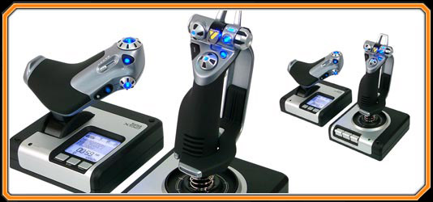
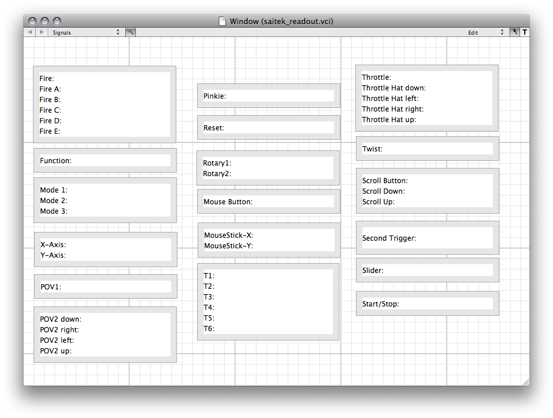

This page explains how to use the Saitek X52 joystick with VisualCommander.
The X52 device consists of separate stick and throttle components that connect to your computer via USB. A variety of buttons, switches and dials are also included, providing a total of 47 different command signals. Click on the picture below to go the Saitek website and learn more.
The Saitek X52 is not included with VisualCommander. However, we do provide a fully functional interface, so that you can immediately begin using the joystick with VisualCommander. All of the source code for the interface is provided as well, so you can easily adapt our code to build a custom interface for your own simulation.
An interface file is provided, called saitek_readout.vci. The interface window is shown below. It simply displays the value of each signal being read from the X52 joystick.
To use this interface with the joystick, simply plug the USB cable in to your computer and start up VisualCommander. Press CMD+D to open the data window, and go to the Sessions tab. Click the "+" sign in the lower left corner to create a new session, and select "Saitek X52" as the data source. Name the session "testrun" so that the interface will recognize the data.
Now open the saitek_readout.vci interface. Try moving the joystick, throttle, and hitting the buttons and triggers. You will see the corresponding values on the interface change.
The X52Scene plugin renders a 3D view of a vehicle with a terrain texture map and sky box in the background. In addition to displaying the location and orientation of the vehicle, this plugin also acts as a data source for the Saitek X52 Joystick.

A snapshot of the plugin is shown above. Here, we have selected a GlobalHawk CAD model for the vehicle graphic. The red green and blue axes affixed to the vehicle are the "x", "y", and "z" axes of the Body-fixed frame, respectively. These axes are toggled on/off with the "b" key, or with the joystick "B" button. Similarly, the inertial NED (North-East-Down) frame axes can be toggled on off with the "a" key or the jostick "A" button. The green trail behind the aircraft is its recent trajectory. The duration of the trajectory can be specified in the plugin's configure window, and the entire path can be toggled on/off with the "t" key. Click-and-dragging the mouse inside the plugin window rotates the view, with the aircraft always kept at the center of the screen. Scrolling with the mouse wheel (or using the touchpad 2-finger scroll, or the +/- keys) will zoom the camera in/out. Pressing the "j", "k", "l", or ";" keys will snap the camera orientation to one of 4 preset views, and hitting the "r" key will reset the camera orientation and zoom. The snapshot below is taken after flying through a turn for about 30 seconds, hitting "k" to see the East-North ground-trace view, and then zooming out until the entire trajectory is visible.

To configure the X52Scene plugin, first drag a copy to your interface from the Tools menu. Remember you can hit CMD+R to pull up the Tools menu. With the plugin in your interface window, CNTRL+click and select "Configure". This pulls up the following window:

The pulldown menus for Terrain, Vehicle, and Skybox allow you to associate the texture map of your choice with each entity. To replicate the built-in Aircraft interface, choose "terrain", "Globalhawk" and "SkyboxT" as shown in the figure. If you are simulating an underwater vehicle, a special underwater terrain and water-box are provided.
The entries on the bottom of the figure allow you to specify which DSim variables are linked to the stick and throttle commands. The X52Scene plugin reads 3 different pilot controls: horizontal stick displacement, vertical stick displacement, and throttle setting. As the figure shows, the throttle setting is linked to: aircraft|pilot:throttle. This is the full path to the DSim variable, and can be read as the "throttle" variable in the "pilot" model for the "aircraft" session.
Note that you can write your own simulation and use the X52Scene plugin to interface stick and throttle data into your simulation. You can use whichever variable names you wish, because you can specify the unique path by configuring the instance of the X52Scene plugin in your VisualCommander interface.